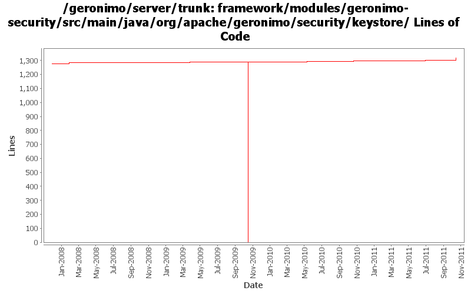

[root]/framework/modules/geronimo-security/src/main/java/org/apache/geronimo/security/keystore

| Author | Changes | Lines of Code | Lines per Change |
|---|---|---|---|
| Totals | 24 (100.0%) | 1388 (100.0%) | 57.8 |
| djencks | 6 (25.0%) | 1303 (93.9%) | 217.1 |
| violalu | 1 (4.2%) | 20 (1.4%) | 20.0 |
| chirunhua | 1 (4.2%) | 16 (1.2%) | 16.0 |
| kevan | 2 (8.3%) | 13 (0.9%) | 6.5 |
| vamsic007 | 5 (20.8%) | 10 (0.7%) | 2.0 |
| rwonly | 2 (8.3%) | 8 (0.6%) | 4.0 |
| jdillon | 4 (16.7%) | 8 (0.6%) | 2.0 |
| jbohn | 1 (4.2%) | 5 (0.4%) | 5.0 |
| ashishjain | 1 (4.2%) | 3 (0.2%) | 3.0 |
| xuhaihong | 1 (4.2%) | 2 (0.1%) | 2.0 |
GERONIMO-6187 filter keystore files under var/security/keystores
20 lines of code changed in 1 file:
GERONIMO-6058 Replace StringBuffer usage with StringBuilder
2 lines of code changed in 1 file:
GERONIMO-6010:NPE when creating keystores
16 lines of code changed in 1 file:
GERONIMO-5607 add warning message
4 lines of code changed in 1 file:
GERONIMO-5607 geronimo-default keystore file not displayed on the administration console
4 lines of code changed in 1 file:
GERONIMO-5295 Fix for trunk
3 lines of code changed in 1 file:
GERONIMO-4916 step 2 move sandbox osgi framework into trunk
1290 lines of code changed in 2 files:
GERONIMO-4916 step 1 remove old framwork
0 lines of code changed in 2 files:
GERONIMO-4597 Validate Web Admin Console input - fixes for CVE-2008-5518, CVE-2009-0038, and CVE-2009-0039
5 lines of code changed in 1 file:
GERONIMO-4258 move geronimo-j2ee into plugins/j2ee
13 lines of code changed in 2 files:
More loggers back to statics
2 lines of code changed in 2 files:
(GERONIMO-3985) Use SLF4J as the primary logging facade for Geronimo
6 lines of code changed in 2 files:
GERONIMO-1761 move geronimo-util to geronimo-crypto. Still pending mv of one test directory that svn wouldn't let me move
13 lines of code changed in 2 files:
GERONIMO-3757 KeyStore type can't be changed
o Allow creation of all possible keystore types supported. Keystore type is no longer restricted to JKS.
o Added a type parameter to create keystore methods.
o Keystores portlet will now allow creating and managing all types of keystores.
o This revision will simplify the configuration changes required to run G on a JVM that does not support JKS keystores (for e.g., Harmony).
10 lines of code changed in 3 files:
GERONIMO-3648 Keystores portlet should provide for changing keystore and key passwords
o Added changeKeystorePassword() and changeKeyPassword() methods to KeystoreInstance.
o Updated Keystores portlet to provide "Change keystore password" and "Change key password" links.
0 lines of code changed in 2 files: